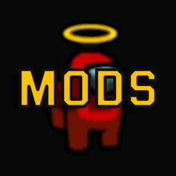
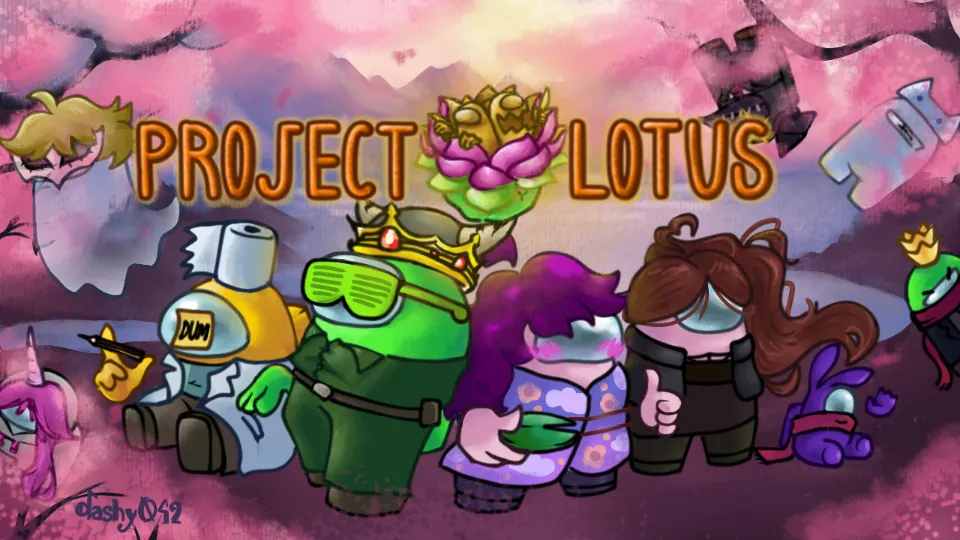
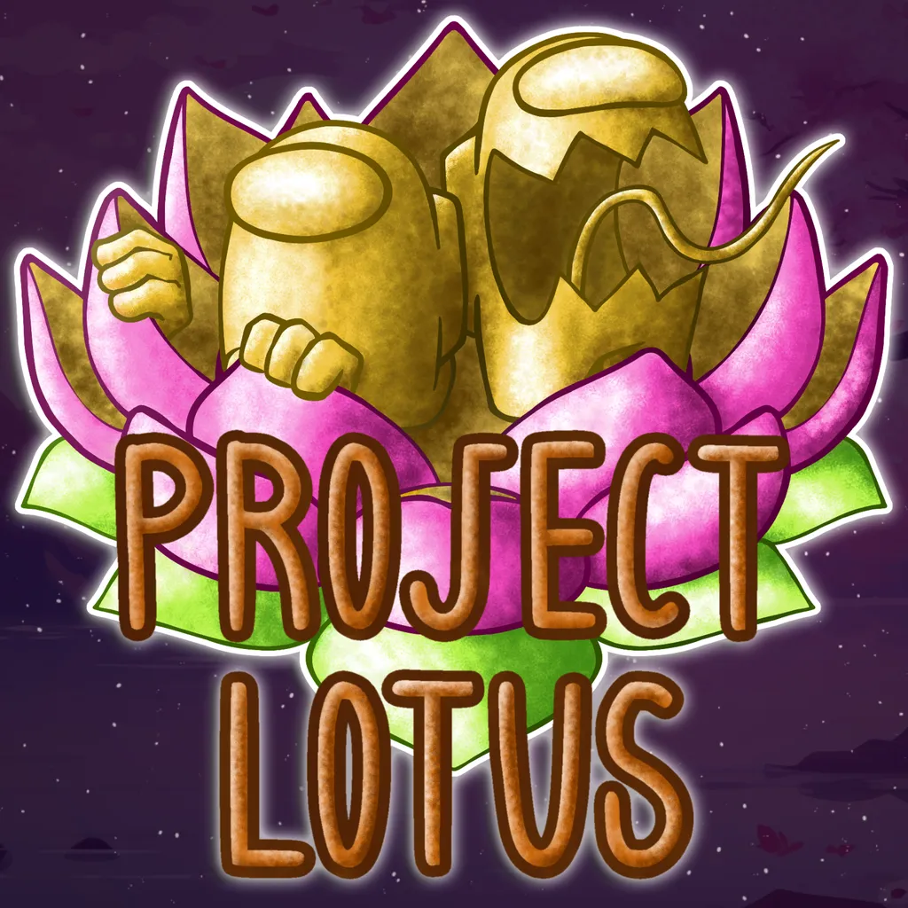
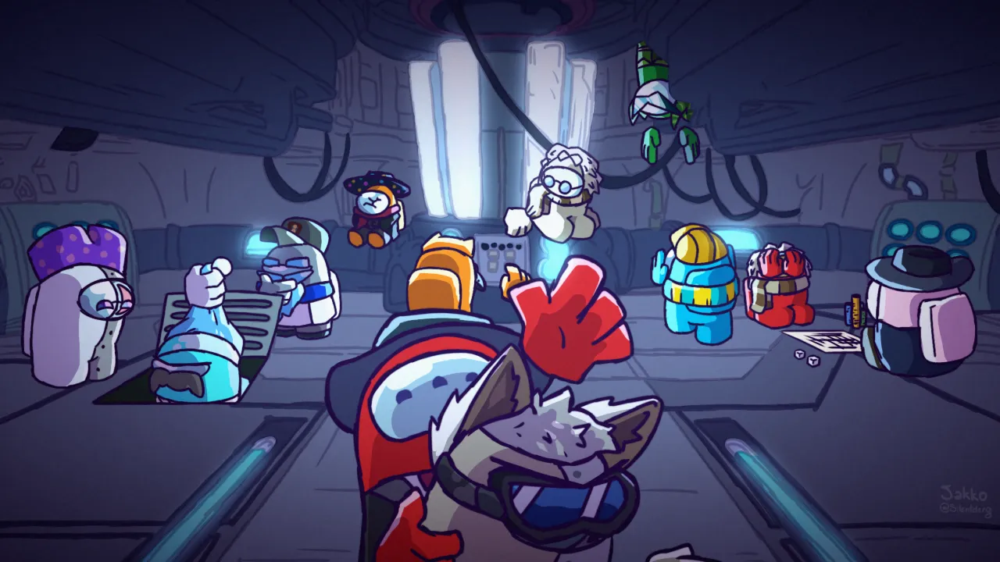
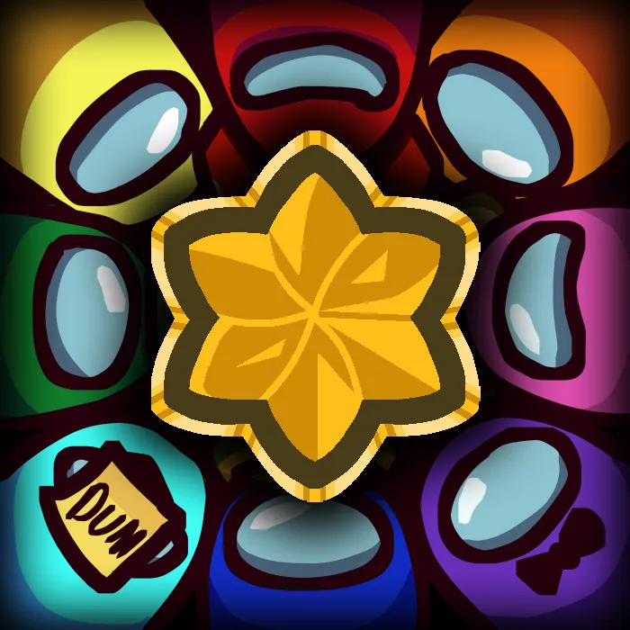
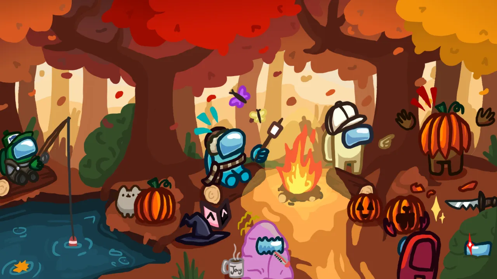
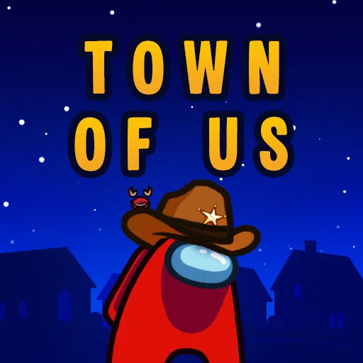
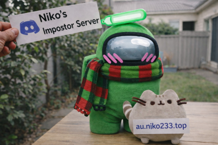
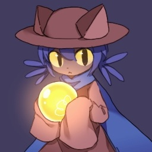

Our serverModded lobbiesEvents & tournaments

Modded Among Us Lobbies (MAUL)
Find modded Among Us lobbies with verified hosts, discover new mods, and join community events, tournaments, contests, and giveaways.
Meet five communities helping shape modded Among Us. MAUL, Project Lotus, All of Us, Town of Us, and Niko’s Impostor Server contribute through lobbies, events, custom regions, mod development, and the people who bring everyone together.

Find modded Among Us lobbies with verified hosts, discover new mods, and join community events, tournaments, contests, and giveaways.


A great fit for a more mature crowd looking for a relaxed place to hang out and enjoy a fun Among Us mod. Good for players who prefer a chill atmosphere and games with plenty of customization.


Great for developers, aspiring modders, and anyone working on their own Among Us project. Connect with other creators, learn more about modding, and explore getting your project onto Starlight.


Perfect if you love playing Town of Us or want to get involved in its development. The community has a developer role for people interested in contributing, plus events to bring players together.


Come for the best cat stickers and a chill place to hang out. Niko helped push host-only Among Us mods forward and helped make custom regions a bigger part of the modded Among Us scene. He's now returning to where he left off with TOHE, revamping it as TOHE:E. Join his Discord for the community, modding updates, and everything in between.
MAUL brings players together through verified modded lobbies and community events. Project Lotus offers a relaxed space for mature players, All of Us supports mod developers and creators through its community and Starlight, Town of Us connects players with events and opportunities to contribute to development, and Niko’s Impostor Server brings together custom-region pioneers and players following TOHE:E.
MAUL, Project Lotus, All of Us, Town of Us, and Niko’s Impostor Server are all important parts of the modded Among Us community. Together, they bring players, hosts, event organizers, mod creators, and developers together and help keep the scene active.